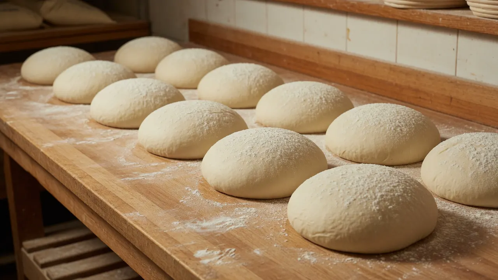
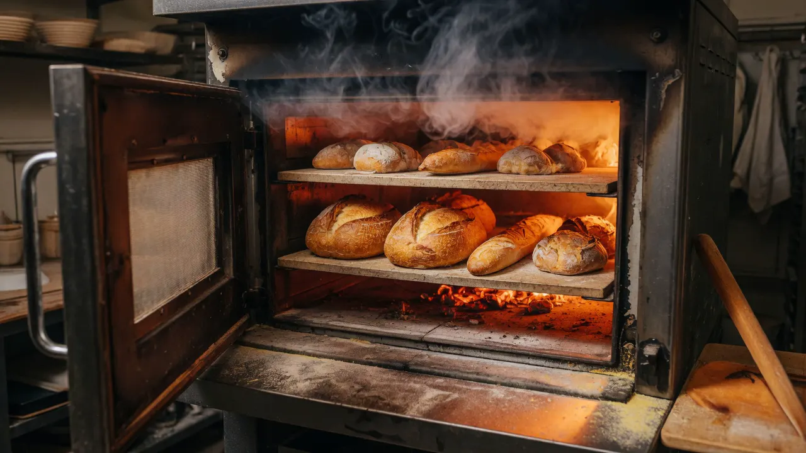

Le pain et le temps
Le pain avance à son rythme
Chez Monco’Pain, les pâtes fermentent 12 heures ou plus. Le levain est rafraîchi ; le temps fait sa part ; les artisans font la leur.


Fermentation
Douze heures ou davantage, avant la cuisson
La fermentation longue n’est pas un argument de vitrine. C’est une suite de temps concrets : nourrir le levain, observer la pâte, attendre qu’elle change, puis décider quand la façonner et l’enfourner. Ici, ce parcours dure au moins 12 heures.
Il n’y a pas d’accélérateur dans le récit proposé par cette étude. Il y a une pâte vivante, de la température, un calendrier de fournées et l’attention de l’équipe.

Les mains, puis le four
Regarder la pâte avant de décider
Le pétrissage et le façonnage demandent des repères que l’on sent autant qu’on les mesure. La pâte est pliée, divisée, tendue, mise à reposer encore. Puis le four prend le relais.
À la sortie, la croûte se fixe. En refroidissant, elle peut chanter doucement. C’est un bruit de cuisson qui se termine, pas un effet de langage.